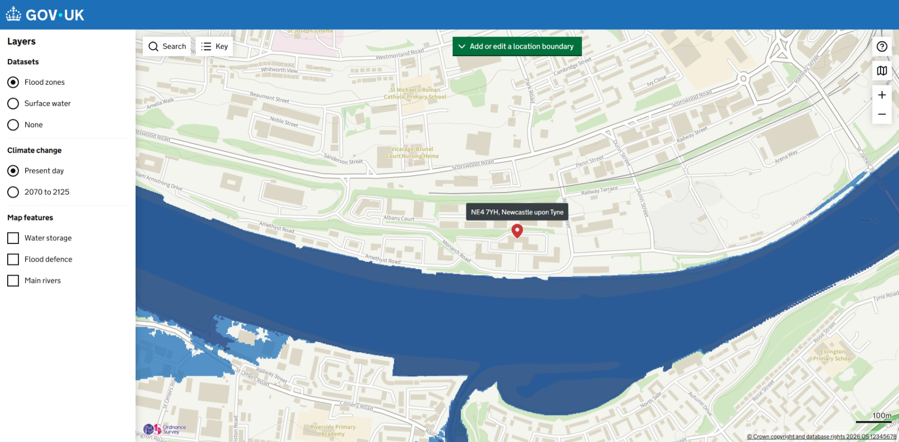
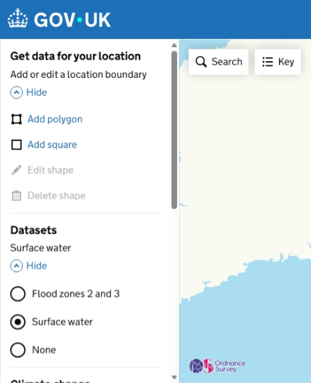
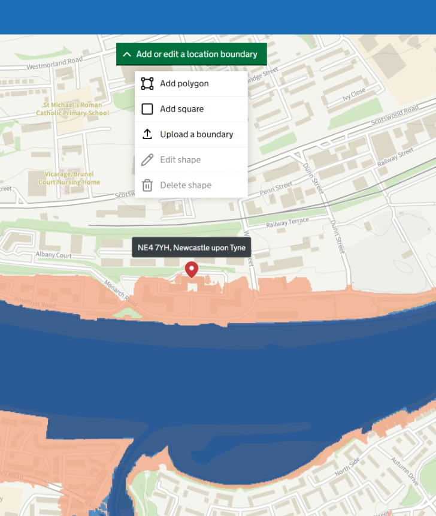
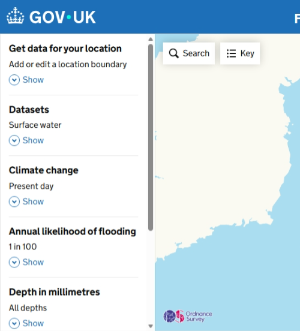
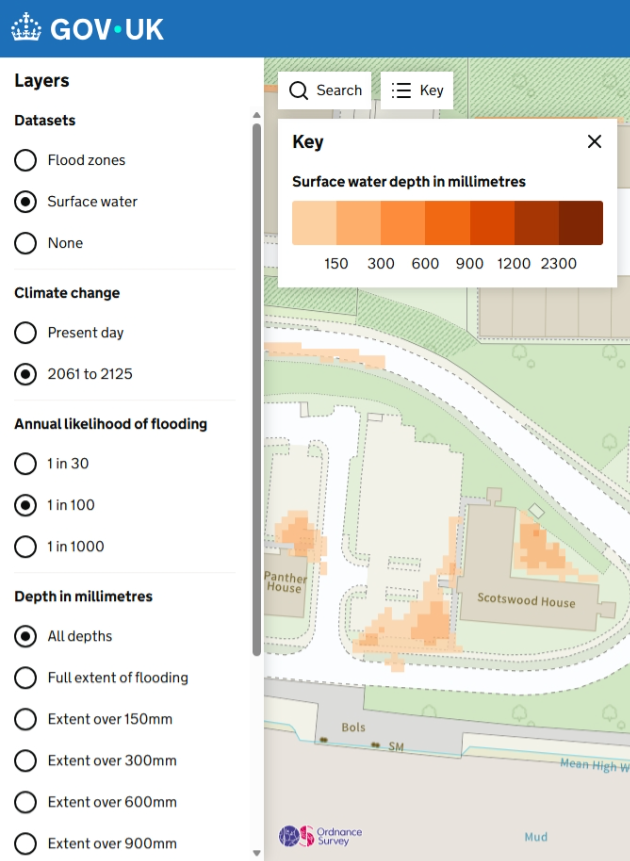
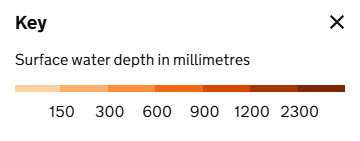
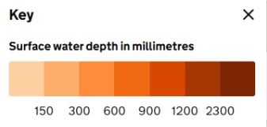
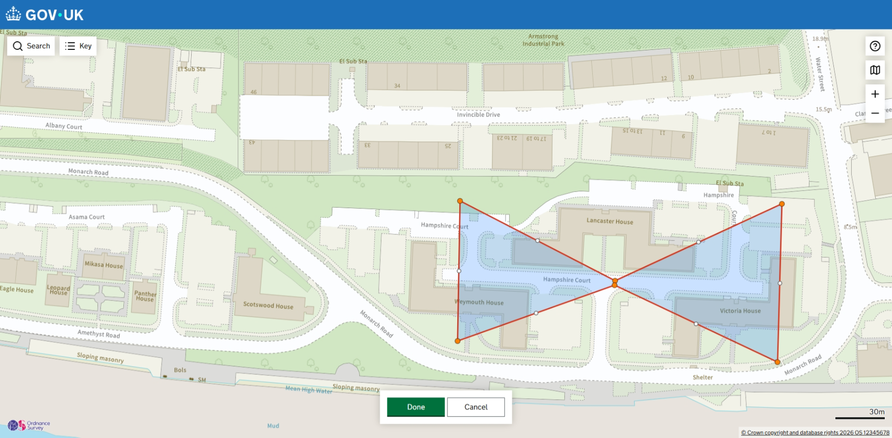

Research carried out August 2026
User research
A new mapping component is being deployed on Flood Map for Planning, bringing some new features to the map. This research round tested the usability of those changes.
We wanted to understand how users find and use the boundary tools, search controls, surface water key and postcode pin when following the journey to request a Product 1 (a download of the flood map).
Searching for a postcode now drops a pin with a label at the centre of the postcode.

What we found:
The "Add or edit a location boundary" button has moved from the side panel to a green button at the top centre of the map.
Before

After

What we found:
The side panel options are now always expanded, instead of being hidden behind "Show" and "Hide" controls.
Before

After

What we found:
The surface water key has been updated to sit with the new map component.
Before

After

What we found:
If a user draws a boundary where the lines cross over each other, the shape snaps back, as self-intersecting boundaries are not allowed.

What we found: